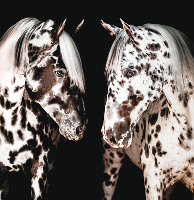

Appaloosa
The Appaloosa is an American horse breed best known for its colorful spotted coat pattern. Each horse's color pattern is genetically the result of various spotting patterns overlaid on top of one of several recognized base coat colors.The Appaloosa is best known for its distinctive, leopard complex-spotted coat, which is preferred in the breed. Spotting occurs in several overlay patterns on one of several recognized base coat colors.
Friesian
The Friesian (also Frizian) is a horse breed originating in Friesland, in the Netherlands. Although the conformation of the breed resembles that of a light draught horse, Friesians are graceful and nimble for their size. The Friesian breed is most often recognised by its black coat colour, however, colour alone is not the only distinguishing characteristic. Though the breed nearly became extinct on more than one occasion, the modern day Friesian horse is growing in numbers and popularity, used both in harness and under saddle. Most recently, the breed is being introduced to the field of dressage.
Gypsy
The Galineers Cob, also known as the Traditional Gypsy cob, Irish Cob, Gypsy Horse or Gypsy Vanner, is a type or breed of domestic horse from the islands Great Britain and Ireland. It is a small, solidly-built horse of cob conformation and is often, but not always, piebald or skewbald; it is particularly associated with Irish Travellers and English Romanichal Travellers of Ireland and Great Britain.